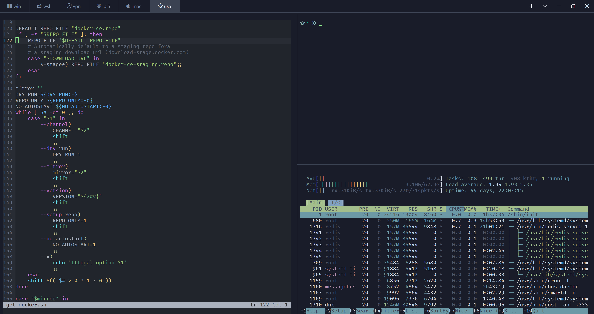

Som — это Zed, из которого вынули весь редактор и оставили только терминал: табы в заголовке окна, сплиты, живые SSH-сессии, которые переживают закрытие окна и разрыв связи. Один бинарник, GPU-рендеринг, ноль лишнего.

Som собран из тех же крейтов, что и Zed — GPUI-рендеринг, тот же движок тем — но без редактора, LSP, AI и коллаборации.
Построен на GPUI — том же UI-фреймворке, что и в Zed. Плавная прокрутка и отрисовка текста без лагов даже на больших scrollback-буферах.
Без отдельной полосы вкладок — табы живут прямо в title bar. Профили с иконками, быстрое переключение, drag-zone со спиннером восстановления.
Ctrl+\ — новый сплит, направление чередуется вправо → вниз. Каждый таб хранит свою раскладку независимо, парковка при переключении.
Табы, сплиты, позиция и размер окна — всё в db.json. Перезапуск возвращает вас туда же, где вы остановились, без ожидания подключений.
Формат тем идентичен Zed — Catppuccin, Tokyo Night, Dracula, One Dark Pro и любые другие Zed-темы работают без конвертации.
Полный контроль над OpenType-фичами: лигатуры, стилистические наборы, вес шрифта 100–900 — всё как в настоящем редакторском движке.
Никакой установки. som.exe запускается из любой папки — все вспомогательные библиотеки встроены и разворачиваются сами при первом старте.
Оконный / развёрнутый / полноэкранный / свёрнутый режим, точный отступ терминала от края окна, фиксированная позиция и размер запуска.
Каждое действие — от нового таба до фокуса сплита — переопределяется в JSON. Дефолты продуманы отдельно под Windows, macOS и Linux.
Свой минималистичный аналог tmux, встроенный прямо в Som. Открыли SSH-таб с "tmux": true — и дальше связь с хостом можно рвать сколько угодно раз.
Каждая сборка — самодостаточный бинарник для своей платформы, без установщика и внешних зависимостей.
amd64 · встроенный патченный ConPTY из проекта Windows Terminal — без стандартных багов системной консоли.
Apple Silicon (arm64) · нативная интеграция с system title bar и жестами трекпада.
amd64 · X11 и Wayland через GPUI, som-tmux деплоится и на удалённые Linux-серверы тоже.
~/.config/som/settings.json — правите, сохраняете, изменения применяются мгновенно. Невалидный JSON не ломает Som — покажет баннер с ошибкой и продолжит работать на прежних настройках.
{ "window": { "theme": "Nord Dark", "mode": "maximized", "selection": "#88c0d0" }, "font": { "face": "FiraCode Nerd Font", "size": 14, "features": { "calt": true } }, "tabs": [ { "name": "local", "shell": "$SHELL", "default": true }, { "name": "prod", "shell": "ssh prod-1", "tmux": true } ] }
Тема, шрифт и лигатуры, форма и цвет курсора, скорость прокрутки, профили вкладок с любыми командами (обычный shell, ssh, wsl), горячие клавиши на каждое действие, отступы терминала, стартовая позиция и размер окна.
Профиль по умолчанию помечается флагом "default": true — именно его открывает Ctrl+N и кнопка «+».
Все специфичные для Som действия — на Ctrl+Shift+*, чтобы не конфликтовать со стандартными системными сочетаниями.
| Ctrl+Shift+= | Новый таб (профиль по умолчанию) |
| Ctrl+Shift+1…0 | Таб из профиля 1–10 |
| Ctrl+Shift+- | Закрыть активный таб |
| Ctrl+Shift+\ | Новый сплит |
| Ctrl+Shift+Backspace | Закрыть сплит |
| Ctrl+Shift+←/→ | Переключить таб |
| Ctrl+Shift+↑/↓ | Фокус между сплитами |
| Ctrl+=/-/0 | Масштаб шрифта |
| Ctrl+Scroll | Масштаб шрифта колесом |
| Ctrl+Shift+C/V | Копировать / вставить |
Открытый исходный код, форк Zed, минимум зависимостей. Соберите сами или возьмите готовый релиз.